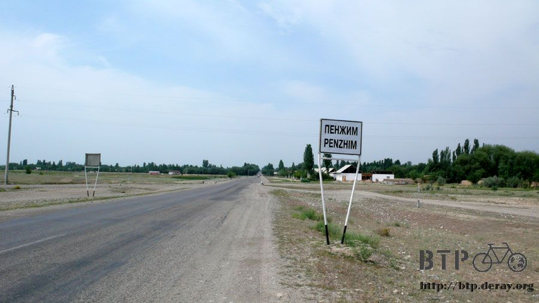
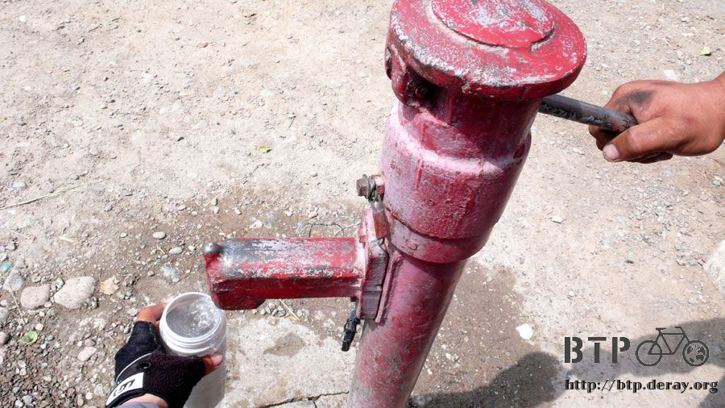

穿越國境
真不敢相信，不過是要去哈薩克騎一個月的單車而已，居然又讓我失眠了，翻來覆去的睡不好，天快亮時才入睡，
彷彿剛睡著的瞬間，手錶的鬧鐘就『嗶嗶嗶！』的響了起來，很想賴床，可是今天可能沒辦法如我所願。
洗把臉之後開始將小多和包包分批拿到樓下，昨天睡前已經將東西都收拾好，所以不用花什麼功夫。
在旅館老闆的道別聲中，早上六點半，於希望之光下出發～
騎著小多往霍爾果斯去，短短七公里而已，半個小時就到了，一進入關卡也就是當地人俗稱的『國門』，
排隊的大卡車依然繼續排著隊，不同於前幾次來的樣子，今天關卡有開放、而且還不到下班時間，所以這裡很熱鬧。

才剛靠邊停下小多，馬上就被各式各樣的人包圍起來。
換外幣的、乞討的老婆婆、純聊天的、和提行李的。
換外幣的確是非常重要的事情，將腰包裡所剩下最後的八百塊人民幣全部換成哈薩克的堅戈。
一百人民幣可以換一千五堅戈，所以八百塊錢瞬間就變成一萬兩千塊，但是這些錢在哈薩克很不耐花就是了。
八百人民幣我可以在中國生活至少半個月以上，一萬二千塊的堅戈不知道能不能讓我花上三天？

換完這最後的人民幣，僅剩下的只有七塊錢，其中的一塊錢拿給乞討的老婆婆，剩下六塊，到小販區那邊想買點東西當早餐吃。
花四塊錢買了一瓶果汁牛奶，最後兩塊去水果攤販那裡，老闆本來說這點錢只能買一根香蕉，稍微盧一下之後還是買到了兩根大香蕉。

這樣的早餐還挺不錯的～有水果吃還有牛奶可以喝，而且剛剛好把所有的人民幣都花光了，也不管接下來通關會不會需要用到人民幣。
正準備開動的時候，另外一個乞討的老婆婆又靠了上來，伸著手跟我要錢，我說我已經沒錢了，不然香蕉分妳吃一根好了。
結果真的拿一根香蕉走 ~_~
早餐的份量減少了，扼腕，趕緊把剩下的香蕉吃掉，不然等一下連吃都沒得吃，連果汁也喝光之後，又有另外的乞討老婆婆靠上來。
真的沒錢啦～不要再跟我要錢了 ，連香蕉都吃完了，不然空的飲料罐子給你好了。
居然連空的罐子也一樣的拿走 >"<
再繼續這麼待在這裡，身上全部能被拿走的東西都會被扒光的。
通關的部分分為兩種，車子走的，跟人走的。
有很多穿越國境的大巴士要通行，但是車上的乘客得全部下車自行通關，包含全部的行李都要拿下來，檢查之後在放回車上。
這是非常大的工程，行李的數量和人潮之多簡直跟逃難沒兩樣，所以提行李的人生意很好，在這樣混亂的人潮當中，要是沒有提行李人的推車以及吆喝聲，
手上的行李根本就不可能提的動，能不能安全的拿進國門都是個大問題，提行李的還會用膠帶將行李捆好幾圈，服務挺周到的。

在人走的通行區部分，就是排著隊伍的長龍，各式各樣國家跟種族的人都有，極度的壯觀。
我本來也是想一大早到這邊來排隊，然後早一點通關，賣我果汁牛奶的老闆以他多年的經驗跟我說。
在那邊排隊是沒有意義的，等門開的時候，才是混亂的開始，插隊的、硬擠的、從欄杆旁邊翻過去的、丟擲行李箱的，什麼亂七八糟都有。
他跟我說好好的坐在這裡休息，在那邊站著只是多累人的而已。
相信他的話，七點就坐在攤販區的欄杆處靠著小多休息，七點半多海關上班的人員終於搭著車子出現了。
本來說八點會開啟的關卡，硬是到了八點半才開啟，還好今天不怎麼炎熱，相較於前幾天，今天是個涼爽的好天氣。

在倚著欄杆等待的時候，氣味相投的旅行者多半都會聊個兩句，一個背著大背包的丹麥自助旅行者，Jens，就在關卡前遇到了。
他已經遊歷四個月了，從歐洲、俄羅斯、內蒙古、中國、西藏，現在要到哈薩克去，然後是中亞，接著到印度。
不同於一般的背包客，他的旅行其實是配合他的藥草專長所學，一邊旅行一邊研究各地的植物、花草，他們生長的特性以及藥用性質。
在丹麥是老師的他，看起來應該比我還大上幾歲，結果居然才24歲而已！歐洲人熟得比較早嗎？=..=
其實Jens今天是來闖關的，他的簽證明天才生效，可是他想來試試看運氣，說不定海關願意讓他早一天入境。

八點半，鐵門準時打開，如果汁牛奶老闆所說的，混亂正式引爆，一堆靠著欄杆的人先將行李丟過去排隊人潮裡，然後翻過欄杆，就變成排在最前面的人。
推行李維生的人，將滿車的行李放在小推車上，大聲吆喝然後往人群中硬擠，他的客人則跟在後面走。
各種不同語言此起彼落，若不是在說『別擠呀！』那肯就是各國的國罵了。

相當令人讚嘆的景觀、這就是穿越國境呀。
Jens笑著說，這個還算小意思，俄羅斯的國境是一坨大便，內蒙古進入中國的國境，所有的人都在打架，載客的吉普車全部撞成一團。
等人潮稍微舒緩一點，我才牽著小多小心的跟著擠過小門，這邊還只是第一步而已。
接下來就是進入海關大廳，分為中國人以及外國人，第二次要排隊，剛剛瘋狂擠進來的人，九成五都是排在中國人那邊，人滿為患，
外國人的地方反而像是給有特權的人走的通道一樣，海關人員看到我牽著小多，優先放行。

行李完全沒經過任何檢查，直接讓我通關出境，然後才檢查我的證件，在台胞證的地方蓋上『2007.06.25霍爾果斯出境』的章。
附帶一提，世界各地的海關雖然規定不太一樣，但是基本上都是禁止拍照的，在俄羅斯海關拍照你就會進監牢，所以不要像我這樣沿路拍。
出了國境又是排隊的另一個開始，為了要進入哈薩克，要穿越五百公尺的國界，這段路，禁止步行、禁止騎自行車，唯一的方法就是搭接駁車。
短短的五百公尺，收費二十元人民幣、還要再交給哈薩克政府三百堅戈的通行費。
一輛一輛的大巴士、小巴士接連開走，擠了好幾次都沒擠上，因為小多太難牽進車子裡了，之後Jens順利的出境了，託他的幫忙之下終於擠進了一輛小巴裡面。
跟著其他人的行裡堆擠在一起，真的是超混亂、超開心的，其他的人看到我終於成功的擠進了往國境的巴士，紛紛為我鼓掌拍手。
因為身上沒有人民幣了，所以車資的部分是由Jens代付，而通關費的堅戈則是我代替Jens支付，這樣兩個人剛好打平。
短短的五百公尺要價二十元，一些旅遊經驗豐富的人說
『馬的～跟香港的計程車一樣貴。』

無論如何終於擠上了小巴，也往國境駛去，沒幾分鐘就下車，先將堆積如山的各式行李箱一個一個傳下去，我跟小多才有辦法下車。
硬擠在後面，很擔心小多會不會被擠壞，下來後查看一下，除了檔泥板的一跟固定支架有點彎曲，用手扳正之後其他都沒事。
現在處於『已經離開中國、但還沒進入哈薩克』的階段，牽著小多繼續進入哈薩克的海關，繼續排隊等著被查看護照以及填寫入境表格。
入境表格是哈薩克文，有些欄位沒有英文翻譯，根本不知道怎麼寫，其他的海關人員好心的幫我填寫。
護照查完之後接著是行李檢查，大家將行李一個一個的放進會自己轉動的X光行李檢查機器裡，然後排隊等著檢查身上有無違禁品。
一個排隊中的小鬼賊賊的問我說『嘿～你打算怎麼把自行車和那些包包放進那台機器裡呀？』
轉過頭看了他一眼，苦笑的說，『問得好～我也正在想同一個問題。』
待站在X光機器前想著該怎麼辦，就被『工作員人通關』的海關人員揮手叫過去，要我拿護照給他看，他翻著護照，寫幾個字在表格上，
然後？
然後我就得以放行啦！
完全不用接受任何的行李檢查，人身檢查也直接跳過，從中國海關到哈薩克海關，大家對這個牽著腳踏車通關的我都是極度的禮遇。
踏出建築物，終於進入哈薩克的領域了，也完成了人生史上第一次的穿越國境大冒險。
其他已經穿越國境的人，則要繼續在這裡等著他們的巴士也完成通關手續才有辦法繼續走下去。
牽著小多找到路之後就跨上單車往哈薩克前進，離開海關之前回頭最後拍一張照片，下次在穿越的時候就是Jens說像一坨屎一樣的俄羅斯國境了。

我以為國境的兩邊至少都是某種程度上很熱鬧的邊境城市，中國的另一邊還有一個霍爾果斯，那哈薩克的這一邊呢？
出了國境一看，什麼鬼都沒有，荒涼的跟什麼一樣，除了人之外唯一的生物居然是烏鴉，呱呱呱的叫既不好聽也不吉利。
這邊除了延綿好幾百公尺的排隊大卡車之外，什麼東西都沒有，沒有村鎮、沒有商店、沒有餐廳、沒有旅館。
穿越國境之後另外一個差異就是自然景觀，明明才相距不到幾公里，真的有辦法讓景觀改變得那麼大嗎？
一眼望去都是荒涼的景色，不同於戈壁攤那樣的死寂，這邊是充滿著綠意的大地，但是極度的荒涼。
看起來就是哈薩克人口太少，而哈薩克的國土太大，沒有足夠的人可以開墾這些土地，就任由他自然的生長，比人還高的草原到處都是。
畜牧的人也變少，幾乎已經到了完全看不到的地步，在中國境內看到那麼多哈薩克牧民，到了哈薩克反而看不見，真是太有趣了。

我的好朋友－加油站，它的規模瞬間變小了，接下來我還要靠著加油站當作休息的地方呢，變小沒關係，還可以乘涼就好了。

離開國境之後的路很不怎麼樣，小多的輪胎之所以在橫跨整個中國之後還不需要更換，就是因為中國大部分的道路鋪設的都很好。
但是哈薩克的道路則是粗糙的石頭柏油路，騎起來坑坑疤疤的，不僅累人也很費力。
今天看到的第一個道路指示牌，整個人很慌，只標示了哈薩克文，好一點的還會標示俄文，但英文則是可有可無。
騎了好一段路之後才看到穿過國境以來的第一個村莊，PENZHIM。

在這邊房子的外觀已經和中國有著非常大的差異，尖尖的屋頂、大大的庭院，相當寬敞的感覺，建材則有相當比例都是木造的。
另一個感受很大的差異就是人情味，哈薩克人整個很友善、很好客、很熱情。
會跟我打招呼的路人，從在中國大約3%激增到90%，路上所有的人，不論他離我遠還是近，或是他當時正在幹嘛，一定會跟我揮手打招呼。

若是我沒注意到他的揮手，他就會吹著響亮的口哨聲引起我的注意力，然後笑笑得跟我揮手。
若當時他們正在溪邊玩水，就會招手要我過去游泳，若是幾個大叔脫得剩下一條內褲正樹蔭下乘涼，也會揮手要我過去休息一會。

要是我也對著他們說一聲『賈克斯馬』(哈薩克語中的你好)，那有高達五成比例的人會請我過去那邊休息聊天之類的。
可是我都聽不懂呀，傻傻的笑，最後只比著我騎乘的路，問一下這邊是通往阿拉木圖沒錯吧？

路上的告示牌少得很誇張，而道路也沒有名字，甚至連標示距離的石碑都沒有，在中國至少是一公里就會出現一個石碑，這邊什麼都沒有。
沒有路名的路、沒有距離的路，若是我手上真的有一本詳細的哈薩克地圖，不知道能給我什麼幫助@@"
這條路的路況雖然不是說很好，但是兩旁種植的樹木則很多，在陰影中騎車感覺很舒服。
哈薩克人開車習慣很好，不會動不動就鳴喇叭，而且他們大白天就會開著車頭燈，對於行車安全蠻有幫助的。
那種舊式的『凸型』小轎車在這裡隨處可見，很可愛，車頂上則會綁著各式各樣的行李。

巴士等候站都裝飾的非常華麗，牆壁上畫的是立體的圖案，顏色鮮豔內容很有趣，一路上的巴士站所畫的圖案都不一樣。
路旁偶爾會看到的景色，因為有獻花，感覺像是墳墓，可是又沒那麼恐怖。

路邊偶爾會看到賣杏子的小販，不想花錢買也可以自己去樹上摘，整棵樹結了滿滿的杏子，多到誇張。
賣杏子還是個正常的生意，有些小孩會在路邊擺一張桌子，上面放一個寶特瓶、兩個碗，就這麼做起生意來了，難道是在賣水嗎？
因為招牌都看不懂，所以也不知道哪個是哪個，但是慢慢的已經可以猜出來商店、咖啡店這些招牌。
在一間掛著白布幔，門口有兩個小孩在喝飲料的地方停下車，雖然沒有招牌，但是直覺裡面就是一間商店，我的肚子很餓，口也很渴。
進去一看果然沒讓我失望，東西雖然不多但的確是一間商店，買一瓶可樂，聽不懂多少錢，就拿一張兩百元給老闆娘找。
找回了一堆像是台幣一塊錢大小的硬幣，銅色的是十元、銀色的則是二十元，這瓶可樂是八十元。
坐在門口喝可樂，瓶子上面除了商標是英文之外，其它所有的文字都是哈薩克文，翻轉著瓶子真是啥也看不懂，但味道是一樣的。
回到店裡再買一包餅乾，將剛剛找給我的零錢放在手上，看要付多少錢請老闆娘自己拿。
早餐是一根香蕉加果汁牛奶、午餐則是可樂加一包餅乾，還是餓到不行的時候就吃包包裡的餅乾充飢。
路上有看見一些像是咖啡廳結合簡餐的店，可是我就是沒停下車進去看看，只是狐疑的猜想招牌的內容，然後就這麼騎過去了。

今天我不知道自己的落腳處在哪裡，路上會經過的城鎮寥寥無幾，遇到有房子有人的地方，我就拿出筆記本，指著上面寫的哈薩克文『旅館』。
因為不會念，所以就寫在本子上用看得比較快，問一下這個地方有旅館嗎？結果都是沒有的。
既然沒有那我就接著往下騎吧，騎到一個有旅館的地方，第一天還是不要太辛苦，住旅館比較輕鬆一點。
這個看起來就是有錢人的家～
下午三點多騎到一個看起來比較有規模的小鎮，繞來繞去想找看看有沒有旅館，又被幾個大叔給招喚過去。
講不到兩句話他們馬上就會發現我聽不懂哈薩克語，拿著筆記本問他們這邊有沒有旅館？答案是沒有的。
大叔拿一根樹枝，就在地上畫起了地圖，要離開這邊然後右轉，往前走經過一個圓環，接著一直走下去才會有旅館。
我的老天，我已經累翻了說@@"
有大叔發現水壺裡已經是空的了，就帶我到旁邊的水龍頭裝水，真是上天的恩惠，先喝了滿肚子的水，然後再把水瓶都裝滿。
在哈薩克感覺很容易口渴，汗也是流個不停。

照片右邊是幫我裝水的大叔，左邊是畫地圖跟我報路的大叔，中間的純粹是來湊熱鬧的。

照著大叔的地圖繼續往下走，路上的景色除了荒涼還是荒涼，什麼東西都沒有，鎮跟鎮的距離有七十公里，整個國家很大。


騎著車第一天就有點疲憊，想著還有多遠才會有城鎮讓我過夜，該不會第一天就要露營了吧。
瓶子裡的水很不耐喝，沒兩三下就又見底了，留下最後一口水不敢喝光，若真的要露營也得有水喝才行，即使是一口。

路上經過一條大河，河中間都是沙洲，不要小看這些沙洲，日積月累下來，在上面可是長出了整片的森林。

而森林裡面不知道有什麼奇怪的機器，真是很礙眼的東西。

一直騎到晚上八點，因為時間調慢了兩個小時的緣故，太陽下山的時間又恢復正常了，逐漸開始夕陽西下，可是此時還不知道城鎮離有多遠。

眼光已經變成在尋找哪邊有比較好的露營場所，看著樹叢當中，彷彿發現房屋的形狀。

繼續往前騎一段路發現真的是房子、這裡是個小村莊，叫做『巴哈德』。
就算沒旅館也無所謂了，我需要商店買東西喝，還有餐廳吃飯，這兩個總比旅館好找多了吧？

巴哈德不大，破破小小舊舊的，也許我需要的兩個東西在這邊並不是那麼好找...

越來越習慣被路邊的大叔招喚過去，不光是打招呼說聲嗨而已，一定要拉過來聊兩句才行。
這次不拿筆記本出來了，直接拿出的水瓶，打開蓋子往下一倒，空空如也，接著表演口很渴想要喝水的動作。

他們知道我在找的是商店，順著大叔們說的路走，一個沒有招牌的地方，有個年輕人站在門口，
這邊就是我需要的商店了，沒有大叔指點，我翻遍整個城鎮也找不到。

進入商店找喝的東西，大瓶的冰雪碧一口氣先買兩瓶，站在門口整瓶就這麼咕嚕咕嚕的灌了起來，這樣似乎是很罕見的舉動。

這個家的媽媽帶著漂亮的女兒散步回來看到我和小多，對著我比了吃飯和睡覺的手勢邀請我進去裡面。
本來只想買一些飲料跟食物就要去露營，結果第一天就是被哈薩克人招待到家裡去住，非常的幸福。
先洗一把臉，路上的小蚊子、蒼蠅多到快讓我抓狂了，一洗臉才發現臉上已經沾黏了好多隻黑色的小飛蟲。
這個洗手的不太會用，水箱下的那一根竿子不是用轉的，而是要往上推清水才會流下來，洗把臉之後舒服多了。

這是一個很大的家族，除了爸爸、媽媽之外還有四個小孩，兩個大的哥哥都已婚，也生了很多小朋友，還未婚的就是剛剛站在門口的那位。

他叫『發勒哈特』，25歲，是軍人，階級為上士，會說一些英文，所以還能簡單溝通。
坐在屋簷下休息的時候，媽媽『瑪雅』則忙進忙出的幫我準備晚餐，大家都已經吃飽了，還要在為我弄一份。
晚餐的主食是一種吃不出來是啥米的穀類，稱為『葛利巨嘎』，配上馬鈴薯淡淡的香味還蠻好吃的。
還有很多現摘的杏子、又大又硬的餅、一盤子的糖果和餅乾、熱紅茶和甜甜的方糖，非常豐盛的晚餐。

一邊吃飯，一邊問發勒哈特家族裡面其他人的名字是什麼，聽著他念然後音譯成中文記錄在筆記本裡。
吃完一大疊的葛利巨嘎已經很飽了，發勒哈特帶著我去鎮上唯一的一家咖啡廳，這邊是鎮上比較時髦的建築物之一。
我又多學了一句哈薩克語，啤酒叫做『匹娃』，很實用喔～要是以後累了想來一瓶，還知道該怎麼念。
用筆記本比了一整天的『旅館』，也學會了唸法，發音是『嘎幸札』。

跟發勒哈特在這裡一人喝了一大杯的生啤酒，滋味真的是很苦，苦澀到不行，雖然不怎麼好喝我還是說了『甲賀斯』，表示滋味不錯。
從咖啡店往外看，太陽已經看不見影子，走回家裡想著今天我是要睡在剛剛吃飯的地方呢，還是睡在門沿前打地舖。
發勒哈特帶著我進到房子裡，爸爸跟媽媽抱著小孫子正在看電視，是很漂亮溫馨的家，牆上和地上都掛著大地毯。
帶著我上二樓，是一間很舒服的房間，幫我換上新的床單和被套，今天我睡在房子裡面。

流了很多的汗，黏黏癢癢得很不舒服，我問了一個聽起來有點蠢的問題『哈薩克人，每天洗澡的嗎？』
答案是每天洗澡，房間弄好之後，就是洗澡的開心時光了，用大鍋子燒熱水，舀在水桶裡面配上冷水，然後拎著水桶去浴室擦洗，宛如新生。
天已經黑了，穿髒了的衣服就明天再想辦法，吃飯的時候問好了路，這邊往阿拉木圖還有兩百五十公里，
明天騎一百五十公里就會有能住旅館的地方，打算到了阿拉木圖這個大都市再來買地圖。
很有趣的一件事情，要是我今天不在馬路上轉進巴哈德這個小鎮，其實繼續往前騎三公里，就會有一個比較大的城鎮，那邊有旅館可以住。
吃晚飯的時候發勒哈特就說，『前面可以住旅館，但是要錢，今天住我們家，不用錢，留下來。』
哈薩克人很好客、很可愛、很友善、很熱情，雖然這邊的路很爛，標示也不清不楚，但是我很喜歡哈薩克。
在哈薩克的第一天，除了疲憊之外，一切都很平安，而且一點也不失眠，因為太累了，洗完澡之後一沾到床，零點一秒就深沉的睡著。

繼續閱讀：6.26 荒原、上坡、烈日
哈薩克-堅戈－ 1：0.26 台幣
6.25 |
總計：1255元 |
早餐香蕉2元、果汁牛奶4元、給老婆婆1元折合堅戈105元、巴士過路費600元、可樂80元、餅乾30元、雪碧兩瓶240元、生啤酒兩瓶200元 |
|